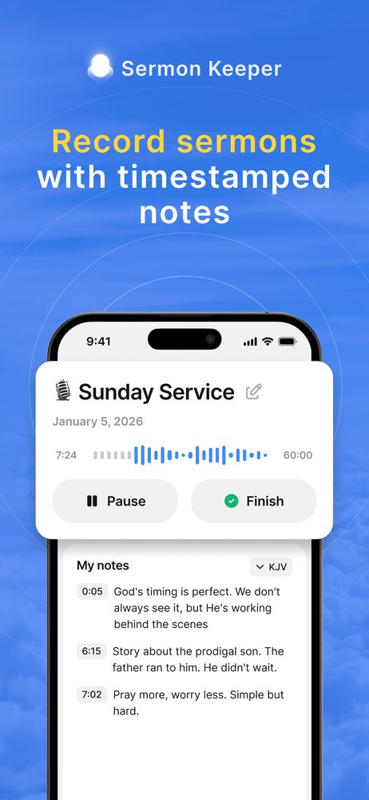

SOAP is a four-step Bible study method — Scripture, Observation, Application, Prayer. You pick a passage, write out the verse that stood out (Scripture), note what you actually see in it (Observation), decide on one concrete way it changes your week (Application), and pray it back to God (Prayer). That's the whole method. It takes about ten minutes, and it turns reading you'd forget by lunch into something you carry into Tuesday. Below is each step, a full worked example on Proverbs 3:5-6, a free printable template, and the fastest way to do SOAP on your phone.
Most of us have had the same quiet-time problem: you read a chapter, it feels good in the moment, and by the afternoon you couldn't say what it was about. SOAP fixes that not by asking you to read more, but by making you respond to what you read. The method was popularized by pastor Wayne Cordeiro and has since become one of the most widely used devotional frameworks in the English-speaking church — largely because it's simple enough to do every morning without a study Bible or a seminary degree.
What SOAP stands for
Four letters, four moves. Each one takes the passage one step closer to your actual life:
- S — Scripture. The verse or short passage you're focusing on today.
- O — Observation. What the passage actually says — before you decide what it means for you.
- A — Application. The one thing you'll do differently because of it.
- P — Prayer. Your honest response, spoken back to God.
The order matters. Most of us jump straight from reading to "what does this mean for me," skipping the observation step entirely — which is how a verse ends up meaning whatever we already believed. SOAP slows that down.
How to do a SOAP study, step by step
Pick a passage — a chapter you're working through, the reading from Sunday, or a single verse a friend sent you. Then work the four steps:
- Scripture. Read the passage slowly, twice. Then write out — by hand, if you can — the one verse that stood out. Copying it forces you to slow down and notice words you'd otherwise skim.
- Observation. Ask what's actually happening. Who's speaking, to whom, and why? Note repeated words, contrasts ("but," "therefore"), commands, and promises. Stay descriptive here — you're reporting, not applying yet.
- Application. Now ask "so what?" Turn one observation into a concrete change for this week — specific enough that you could act on it today, not a vague "trust God more."
- Prayer. Close by praying the passage back to God. Thank him for what you saw, confess where you fall short of it, or ask for help to live it. Two honest sentences beat a paragraph of the right words.
A worked example: SOAP on Proverbs 3:5-6
Reading the steps is one thing; seeing them done is another. Here's a full SOAP entry on a passage most believers know by heart:
S — Scripture
"Trust in the Lord with all thine heart; and lean not unto thine own understanding. In all thy ways acknowledge him, and he shall direct thy paths." — Proverbs 3:5-6 (KJV)
O — Observation
Trust here is "with all thine heart" — total, not partial. It's paired with a negative command: don't lean on my own understanding. Then "in all thy ways," not just the obviously spiritual ones. The promise comes last and depends on the posture: he directs the paths of those who actually acknowledge him.
A — Application
There's one decision this week I've been trying to reason my way through alone. Before I settle it, I'll stop and ask, "Am I leaning on my own understanding here?" — then bring it to God in prayer first, and tell one trusted friend, instead of deciding in my head and asking him to bless it after.
P — Prayer
"Lord, I say I trust you, but I keep gripping this decision. Help me loosen my hold and lean on you instead of my own logic. Direct this path, and give me the humility to acknowledge you in it. Amen."
Notice how the Application isn't "trust God more" — it's a specific move tied to a specific decision. That's the difference between a study you remember and one you don't.
Keep your studies and your sermons in one place
Sermon Keeper builds SOAP cards from a scanned Bible page and records Sunday's sermon too — so your daily study and your notes live together. Free 3-day trial.
Download on App StoreFree SOAP template (PDF)
If a blank page slows you down, start with a structure. This one-page template has a labeled space for each step — Scripture, Observation, Application, Prayer — plus a line for the date and passage. Print a stack for your Bible, or keep the PDF on a tablet.
Download the free SOAP template
A clean, printable one-pager with room for Scripture, Observation, Application, and Prayer. No email required.
Download the template (PDF)Do SOAP in 30 seconds with Sermon Keeper
The template works with any pen. But if you'd rather not copy verses by hand every morning, Sermon Keeper does the setup for you. Point your camera at the Bible page and it builds a SOAP card — the verse pulled in as text, labeled space for your observations and application, and a prayer prompt — in about 30 seconds. Type a reference like "Proverbs 3:5" and the verse autocompletes, so you're never leaving the app to look one up.
Because it's the same app that records and transcribes your Sunday sermon, your daily study and your sermon notes end up in one place instead of scattered across a journal, a Notes app, and a voice memo. If you want the full walkthrough of that feature, see our guide to the SOAP Bible study app.
How to build a SOAP habit that lasts
Keep it short. Ten minutes you do every day beats an hour you do twice. If your studies keep ballooning, you'll quietly stop. Shorter passages, honest sentences.
Same time, same place. Habits attach to cues. Tie SOAP to your first coffee, your commute, or the ten minutes before the house wakes up — the trigger does the remembering for you.
Write, don't just think. The Application step only works if it's written down and specific. A thought evaporates; a written "I'll call my brother today" doesn't.
Let the sermon feed it. Sunday's passage is a ready-made week of SOAP. If you review the sermon within a day, you've already got your Scripture and half your observations.
Turn Sunday's sermon into this week's study
Record the sermon, get a transcript and key points, and scan the passage into a SOAP card — all in one app. Free to try for 3 days.
Download on App StoreSOAP vs other Bible study methods
SOAP isn't the only framework, and it isn't the deepest. Inductive study (observation, interpretation, application) goes further on hard passages; verse mapping and word studies dig into the original languages. What SOAP has over all of them is that you'll actually do it — the four steps are short enough to sustain daily, which is why it's a better starting method than a more thorough one you abandon in a week.
The same principle applies on Sunday. If you're looking for a repeatable way to capture the sermon itself, our guide to how to take sermon notes walks through five methods — SOAP among them — and when each one fits.
Frequently asked questions
SOAP stands for Scripture, Observation, Application, and Prayer. It's a four-step method for reading a passage and turning it into something you actually act on, rather than something you forget by lunch.
About 10 to 15 minutes. SOAP is designed to be a sustainable daily rhythm, not a marathon — the four steps keep you moving from reading to response without stalling.
Start with a short, clear passage like Proverbs 3:5-6, Philippians 4:6-7, or Psalm 23. Wisdom and narrative passages are easier to observe and apply than dense theology when you're beginning.
Yes. You can type the four sections into any notes app, or use Sermon Keeper, which turns a scanned Bible page into a ready-made SOAP card — Scripture, room for observations, and a prayer prompt — in about 30 seconds.
Reading is input; SOAP makes you respond. The Observation and Application steps force you to slow down and answer "so what?", and that response is what makes a passage actually stick.

Do SOAP without the setup
Scan a Bible page and Sermon Keeper builds the SOAP card for you — verse, observations, application, and a prayer prompt — in about 30 seconds. Your first 3 days are free.
- ✓ Free 3-day trial
- ✓ On-device & private
- ✓ Study & sermons together